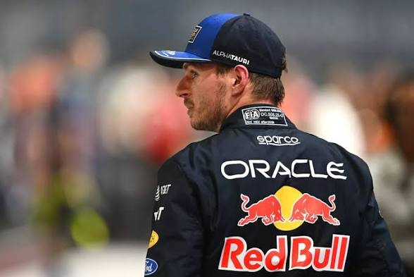
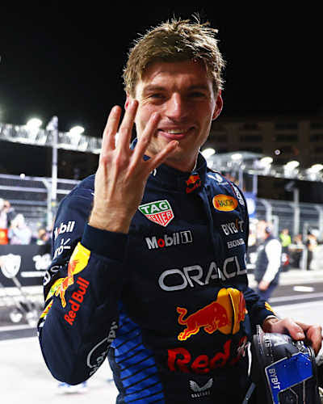

Oracle Red Bull Racing · Tetracampeão mundial
Max Verstappen
Role para entrar no pit lane.
00%
Aquecendo os pneus
Oracle Red Bull Racing · Tetracampeão mundial
Role para entrar no pit lane.
01 O pit stop
Quatro pneus trocados antes que você termine de piscar. Na Red Bull, o pit stop é ensaiado milhares de vezes por temporada até virar reflexo.
02 A máquina
Fibra de carbono, aerodinâmica esculpida no túnel de vento de Milton Keynes e um motor híbrido que entrega cada cavalo no milissegundo certo.
03 Onboard
Mãos no volante, olhos na linha branca. Do cockpit, o mundo se resume a uma faixa de asfalto e à próxima decisão.
04 Pit exit

O piloto
Filho do ex-piloto de F1 Jos Verstappen e da kartista Sophie Kumpen, Max cresceu entre boxes e motores. Aos 17 anos, tornou-se o piloto mais jovem a largar em um Grande Prêmio de Fórmula 1. Um ano depois, em sua estreia pela Red Bull, venceu.
Agressivo nas ultrapassagens, cirúrgico na chuva e implacável quando o carro está à altura, ele transformou a década em uma era com o próprio nome.
Números que reescreveram a história

Las Vegas · 2024
Quatro dedos sob as luzes da Strip. Com o tetracampeonato, Max entrou para um clube de apenas seis pilotos com quatro ou mais títulos mundiais na história da Fórmula 1.
De Toro Rosso ao topo
Toro Rosso, GP da Austrália. O mais jovem a largar na história da categoria.
Promovido à Red Bull, vence logo na primeira corrida pela equipe, em Barcelona.
Última volta em Abu Dhabi decide uma das temporadas mais disputadas de todos os tempos.
Quinze vitórias e título garantido com antecedência, no Japão.
Dezenove vitórias em vinte e duas corridas. Uma temporada sem precedentes.
Título confirmado em Las Vegas, consagrando uma era.
Milton Keynes, Reino Unido
Da compra da antiga Jaguar em 2005 a uma das forças mais dominantes do esporte. A Red Bull Racing provou que uma marca de energético poderia construir campeões, e fez isso duas vezes, com Sebastian Vettel e Max Verstappen.